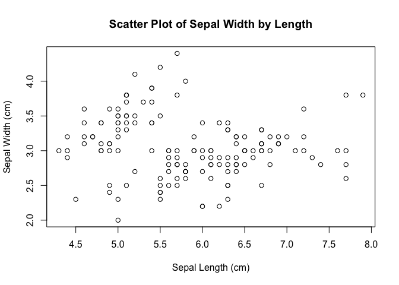
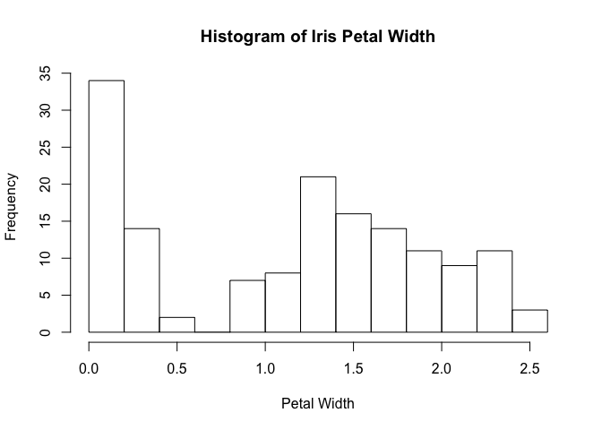
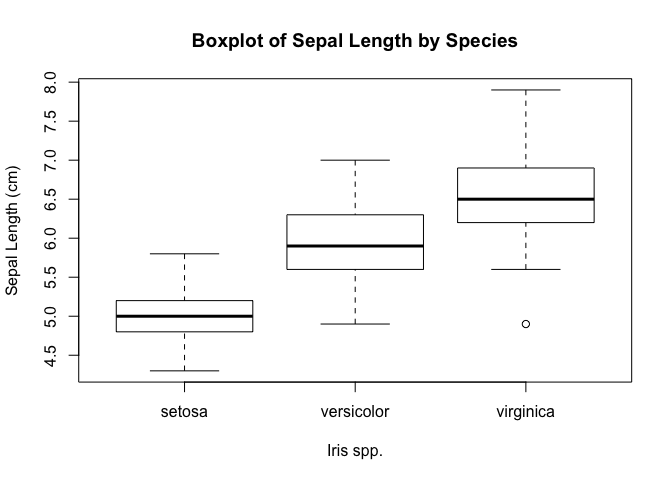

Lab Lecture - Week 1
Spring 2020
Kenji Tomari
Introduction to Lab
The primary purpose of this Lab is to help you navigate R programming for this course. Through the R code you’ll write, you’ll hopefully gain an appreciation of the spatial statistics covered in the Lecture. It would be best for you to consider this Lab as the space to get help learning and troubleshooting the R code for this course, and the Main Lecture as the space for gaining a conceptual understanding of spatial statistics. As your Lab instructor, I’m here to help you navigate all of the material for the course, but my strength is in R programming.
By now you should have read or at least skimmed the literature assigned for the first Assignment. This includes documentation that helps you set up R and RStudio, some assignment guidelines, and the relevant sections of Professor Robert Hijmans’ RSpatial “Introduction to R.” Check our course website for more information.
In addition, I expect that by now all of you have installed R and RStudio. Beyond this, I will try to cover some of the basics discussed in the three sets of readings over the course of the first two labs.
Supplemental
- In Fall of 2018, I conducted two workshops on the very basics of R and programming. You might find them useful. Workshop 1 and Workshop 2.
R and RStudio
Key Points
- When you install R, it includes both the language and a basic software to write/execute code: the standalone R Console. Conversely, RStudio is a feature-rich software to help you write/execute code more easily.
- RStudio has 4 main panels, each with its own tabs. Each panel serves multiple functions, but you can basically think of them like this:
- The top-left panel is where you write documents (i.e. scripts) that you save;
- The bottom-left panel is where you run code (live).
- The top-right panel shows you information about your current workspace.
- The bottom-right panel shows you your assets: files (Files), some toolsets (Packages), plots you’ve drawn (Plots), and the Documentation for R (Help).
- In a script or code chunk, run a single line of code by placing your cursor on that line and hit: CMD + Enter
- In a script or code chunk, run multiple lines of code by highlighting it and hitting the same keys as above.
When R is installed on your computer, you can run it (the interpreter) bare bones from a Command Line Interface (eg. the Mac Terminal), or in what’s known as the standalone R Console. However, RStudio has a lot of useful features and its what most everybody uses to write and execute R code. RStudio is an Integrated Development Environment (better known as an IDE), which not only includes a place to type up code and save it, but a number of features that help you to write the code, upload the code to the internet (via git), preview what your coding documents look like in presentations (eg in markdown), and much more.
The help tab has information presented in a fairly regular structure and has detailed information about commands (i.e. functions). The R Documentation website (see Supplemental) has the same information. In the Help tab, you can either search for the command in question in the search bar, or you can also access it more reliably by going to the console and typing ? followed by the exact command (eg. ?sum).
FAQ
- Can I break my computer coding in R? Answer: The short answer is no. Sorry, you’re not a super elite hacker… yet. The long answer is only if you now shell scripting and you open the terminal tab next to the console tab and start messing around. You’re not gonna do that, so don’t worry.
Supplemental
- The R Documentation website is often easier to use than your “Help” panel.
- The official “definition” of the R Language.
R Markdown
Key Points
- Components of R Markdown:
- YAML (“YAML ain’t markup language”)
- Marked Up Text
- Code Chunks
- Back ticks are not the same as apostrophes.
- A series of three backticks in Markdown indicate the beginning or end of a code chunk.
- One set of backticks indicate “sample” code in the Marked Up Text, eg. `code goes here` looks like
code goes here.
Supplemental

How does R Script differ from R Markdown? R Script is simple source code. Howeve R Markdown is for presentations of your code in some form (pdf, html, presentation slides, etc).
Just as Hypertext Markup Language (HTML) uses code to “mark up” plain text to give it some structure, R Markdown similarly adds structure to both plain text and code in order to present code in a clear and digestible format.
R Programming
Q. What is the pirates’ favorite programming language?
A. Rrrrrrr. But their first love has always been the C.
Coding Conventions
Key Points
- Write comments to describe what is happening in your code.
- Use common coding conventions.
Commenting
It is important to add descriptions of what you’re doing when write up some code. You need only to type a hash (#) in order to begin writing some “comments.”
By convention:
- Coders write the description of what some bit of code is doing in the line preceding the code.
- Coders will also write a shorter description directly following some code on the same line, but will provide two spaces between the code and the comment.
- Add one space after the hash (#).
- Try to keep comments to a length of 80 characters. If your comment exceeds 80 characters, start a new line.
# Here is a comment that describes some code below.
data <- "Some code would go here!" # I put two spaces after the last ".
# Longer comments should always be truncated so that it is easier for others
# to read. Try to keep your code to about 80 characters in length. There is
# a feature in RStudio that places a solid line on your screen that indicates
# where the 80 character limit appears. Even so, comments may appear broken up
# when you create your markdown file.
# Options/Preferences > Code > Display > Show margin > Margin column [ 80 ]What is Data?
Key Points
- Data for Data Scientists: structured with implicit relationships, eg tables.
- Data for Computer Scientists: granular, contingent on the type of information stored in computer memory (think bits and bytes).
Before we dive deeper into programming, I wanted to define and describe a few concepts that are used in slightly different ways depending on the context. For instance, the way Data Scientists talk about data differs from the way a programmer might.
Consider a spreadsheet (aka a table) with rows and columns, where each row is a student and each column is an assignment or test grade. Data scientists call this format rectangular data, because the data is 2-dimensional and has an implicit structure to it, such that there is a relationship between rows and columns: each cell in a spreadsheet has two associations (eg. with a student and an test). We often take this structure for granted. For instance, you may have noticed that if you’ve ever looked at grades of students on Canvas, that it also follows this same format. Properly constructed, a rectangular data set always has “observations” as rows and “variables” as columns. Each student is given a whole row for themselves, while each assignment (each shared category) is given its own column. You might look at some data of car models and various attributes of those cars, like average mpg. It will also follow this format, where each car model is a row (an observation) and each attribute of the car is a column (a variable).
Table. Subset of Sample Canvas Grades
| Student | ID | SIS.Login.ID | Section | Midterm.1…21938 |
|---|---|---|---|---|
| Points Possible | 100 | |||
| Luxembourg, Rosa | 199377 | rluxembourg | GEO 200CN 001 SQ 2020 | 90 |
| Arrighi, Giovanni | 236120 | garrighi | GEO 200CN 001 SQ 2020 | 87 |
| Robinson, Cedric | 259128 | cjrobinson | GEO 200CN 001 SQ 2020 | 99 |
| Postone, Moishe | 235521 | mpostone | GEO 200CN 001 SQ 2020 | 95 |
While rectangular data (i.e. tables and spreadsheets) does not encompass the sum of all digital data that exists in the world1, it plays a strong role in quantitative research and also plays a key role in our class. However, you’ll note that rectangular data is actually a set of information: it contains smaller bits of information. Understanding this will help us better comprehend how programmers use data.
Think about how a rectangular data set differs from a simple list of names of students, or a single student’s name. Because of how the design of computers evolved, programmers think of data in granular ways, beginning with how much space information might take in computer memory. In other words, while Data Scientists think in tables and cells, computer scientists and programmers often think in bits and bytes—0’s and 1’s. A sentence obviously takes up more computer memory than a single letter, but a three-digit number might take up less memory than that single letter. Therefore, as we dive deeper, keep in mind that the specific, minute, nuanced, (might I add, frustrating and confusing) variations we use to understand and classify the structures used to hold data in R exist for reasons of efficiency and memory space. Even so, R tries to balance the more technical ways a programming language interacts with computer hardware, with making data easier to handle for the everyday programmer.
Programming Concepts Applied to R
Key Points
- Variables store bits of information temporarily.
- The Environment keeps track of the variables you’ve created.
- In R, variables come in two forms: simple Atomic types or more complicated structures, like tables. Both simple and structured types of variables are known as R Objects.
- Strictly speaking, R does not technically have variables in the conventional sense that most programming languages do. Unique to R, all (atomic) variables actually have the capacity to store a series of values, not just one value (eg.
c( 5, 9, 100 ). These are called Vectors.
Supplemental
General Concepts
- Variables - In programming, variables are the key way information is temporarily saved (in your RAM) as you process and analyze data. This use of the word differs fundamentally from its use by Data Scientists when they describe table columns as variables. In programming, a variable is a temporary place to hold some bit of information. In Data Science, its an attribute or aspect of some phenomena, like a student’s assignment grade. You can think of a variable like you might think of the term
A1when you work with spreadsheets. In a spreadsheet,A1refers to the first cell in the first column of that document. Behind that term (or symbol) lies a value. - Vectors - Strictly speaking, R has no variables in the conventional sense. This is important because in most programming languages, variables can only store a single value. In R, the variable-like symbols are actually designed to be able hold multiple values. For instance, you might want to take a column of values from your Excel spreadsheet for some type of calculation. In this case, you could use a vector to store that column of values.
In every computer language variables provide a means of accessing the data stored in memory. R does not provide direct access to the computer’s memory but rather provides a number of specialized data structures we will refer to as objects. These objects are referred to through symbols or variables. In R, however, the symbols are themselves objects and can be manipulated in the same way as any other object. This is different from many other languages and has wide ranging effects. (R Language Definition)
Environment - While variables are stored in your RAM, in highly intricate grid patterns of transistors with complex numeric digital addresses, programmers can look up and access variables without having to think about this. Variables are stored in something akin to an addressbook, known as the environment.
Data Types - Variables come in different shapes and sizes, so to speak. In general, we call this variety that we see in variables as data types. In the R language there are two divisions within data types, Atomic or Basic Data Types and more complicated structured data, which are made out of Atomic types. For instance, an Atomic type might be a variable that stores a number, or alternatively one that stores some text. Structured data types will be covered in the next section below, but in short, they tend to be large compliations of information, structured in more elaborate ways.
A Primer on Functions
Key Concepts
- Functions are like a machine in a factory. It does a specific task and follows a specific set of instructions. Maybe you or someone else made it, but once it is made, it is reusable.
Pretty much everything that “does” something in R is a function. The vast majority of functions follow this form: the name of the function; followed by an opening parenthesis; the thing you want transformed (like raw materials being fed into a machine); often, but not always, the “settings” on the machine; and then a closing parenthesis.
Below is the most common example of function. You don’t need to understand the purpose of this function at this point, just understand what it does: combine a bunch of values together.
c( 1,2,3,5,8,13,21 )Here is another very common function used to calculate the average of a set of numbers:
mean( c(1,2,3,5,8,13,21) )## [1] 7.571429We’ll explore what a function is in more detail later in the course.
Atomic (or Basic) Data Types
Key Concepts
- Common Atomic Types:
- Integer (Numeric)
- Double (Numeric)
- Character
- Boolean
- While vectors hold multiple values, they must all be values of the same type (eg. all numbers, or all text).
Numbers
You might think numbers are straight forward, but in most programming languages at least one type of distinction is made, whole and decimal numbers. Whole numbers are typically called integers in programming, and decimal numbers are often called floating point numbers or in R they’re called doubles.
Integers
# Integer
int <- 5L
is.integer(int) # Is it an integer, true or false?
int <- c(5L, 12L, 9L)
print(int)## [1] 5 12 9What’s up with the L? The L serves the purpose of indicating that the number is an integer. Generally speaking, when you code, you DO NOT need to worry about this. I’m just making a point, which is to distinguish that this is different the next code chunk below regarding doubles; I do this by formally naming this integer using the L suffix.
Doubles
# Double
dub <- 5.3
is.double(dub) # Is it a double, true or false?
dub <- c(5.3, 18.2, 3.9)
print(dub)## [1] 5.3 18.2 3.9Text
In programming, text that is used for data analysis or labeling for graphs, must be placed between either ‘single’ or “double” quotation marks. Just as numbers have various names in programming, so does text: they can be called strings, or in the case of R, characters.
# Character (aka String)
ch <- "5"
is.character(ch)
ch <- "Puppies"
ch <- c("Black and Brown", "Tan", "Light Brown with White Paws")
print(ch)## [1] "Black and Brown" "Tan" "Light Brown with White Paws"Boolean
Because computers are built on binary logic, the core type of information they can store is whether something is true or false. These types of data types
# Boolean
bool <- TRUE
is.logical(bool)
bool <- F # R accepts F or False, T or TRUE, but not False/True.
bool <- c(T, T, F)
print(bool)## [1] TRUE TRUE FALSEOther Atomic Types
There are a few other atomic types (namely, complex and raw), but they aren’t commonly used.
Structured Data Types
Key Points
- Whereas Atomic types are 1-dimensional: either a single value or a sequence of values, structured data types have an implicit relationship between 2 or more dimensions.
- Matrices: Like a spreadsheet, but all the values must of the same Atomic type.
- Data.frames: Very much like a spreadsheet of Canvas grades, that can be a mixture of names, e-mail addresses, ID numbers, and number grades, a data.frame can be composed of columns with different Atomic types. Importantly, within each column, the values must be the same Atomic type.
- Lists: Unlike the above 2-dimensional forms of holding data, a list less structured, in fact it is described as semi-structured. It can contain any combination of the above data types. It is highly flexible, but consequently unwieldy to use and there is no uniform way of using it from person to person. Think of lists as a bag into which you can fit all your various data; once the list is created, you can use it to run some process (a calculation, a text extraction, or what have you) across this list.
There are number of structured data types in R. The two most important for this class are described below.
Matrices
Matrices are like 2-dimensional vectors. Much like a table, there is an implied relationship between rows and columns. The key thing to remember about matrices is that like vectors, the whole matrix can be composed of only a single atomic data type (eg. all numbers).
m <- matrix(c(15,6,7,3,12,3), nrow=3)
colnames(m) <- c("Dogs", "Cats")
rownames(m) <- c("Human Society", "Yolo Pet Shelter", "Davis Pet Store")
typeof(m) # the storage mode (how its stored in memory).
class(m) # the implicit class of this object.## Dogs Cats
## Human Society 15 3
## Yolo Pet Shelter 6 12
## Davis Pet Store 7 3Data.Frames
Data.frames are essentially structured like spreadsheets, tables, or csv files. They are 2-dimensional (and rectangular). They have named columns (headers), and can have row names. Most importantly, while each column must only contain values of the same atomic type, every column can be different from the other. So, you can have a column of numbers, but also a column of text. You can’t do this with matrices.
df <- data.frame(name=c("Spot", "Armando", "Coco"),
breed=c("Rottweiler", "Pitbull", "Chihuahua"),
commands=c("Fetch, Roll Over", "¡Dale!", "Sit"),
age=c(3, 39, 11),
stringsAsFactors = FALSE) # What is this? We'll go over it later.
typeof(df) # the storage mode (how its stored in memory).
class(df) # the implicit class of this object.| name | breed | commands | age |
|---|---|---|---|
| Spot | Rottweiler | Fetch, Roll Over | 3 |
| Armando | Pitbull | ¡Dale! | 39 |
| Coco | Chihuahua | Sit | 11 |
Lists
The above types of data are relational structured data2. As described in “What is Data?”, rectangular data has an implied relationship between columns and rows. This is true for matrices and data.frames. We didn’t discussed arrays, but they are more-than 2-dimensional matrices.
Unlike these relational data, R also has an (important) data type known as a list. Lists are semi-structured data types, akin to XML or JSON. They follow a name-value or key-value structure, where each list element has a name, followed by something stored in that named element. Chances are that you will encounter lists at some point. A list in R is like a bag: you can fit just about anything that would store to memory in a list, whether its a single vector, or a big data.frame. Why would you use such a thing? Sometimes you need to process some data and it will get unwieldy if we just keep it in a vector or in a data.frame. You might need to split a single bit of data apart. You might have a list filled with separate data.frames, and you just need to process a few columns from each, and thus perform the same action across a bunch of data.frames.
a_fine_list <- list(
# you could have a vector
a_char_vector = ch,
# you could include a matrix
matrix_called_m = m,
# you could include a data.frame
previous_df = df
)
a_list_is_like_a_bag_of_cephalopods <- list(
octopuses = c("Verill's two-spot octopus", "Caribbean reef octopus"),
squids = c("Vampire squid", "Bobtail squid", "Glacial squid"),
cuttlefish_suborders = c("Vasseuriina", "Sepiina"),
Nautiloidea = data.frame(
Name = c("Karl", "Silvia", "Baldwin"),
Species = c("Palau nautilus", "Chambered nautilus", "Fuzzy nautilus"),
Genus = c("Nautilus", "Nautilus", "Allonautilus")
)
)## $octopuses
## [1] "Verill's two-spot octopus" "Caribbean reef octopus"
##
## $squids
## [1] "Vampire squid" "Bobtail squid" "Glacial squid"
##
## $cuttlefish_suborders
## [1] "Vasseuriina" "Sepiina"
##
## $Nautiloidea
## Name Species Genus
## 1 Karl Palau nautilus Nautilus
## 2 Silvia Chambered nautilus Nautilus
## 3 Baldwin Fuzzy nautilus AllonautilusIndexing
Key Points
- Indexing is how you retrieve values, make subsets of data, or change values in your data.
- You need to know the structure of your data in order to index. For instance, if you want to retrieve a value, you need to know if the data is a vector (in which case you want the position of the value in the sequence), or say a data.frame (in which case you would want the row and column in the 2-dimensional structured data set).
There is a lot to indexing, and this is where a careful reading of Professor Hijman’s chapter on indexing would be useful. Given the time constraint, I can’t go into every aspect of indexing (indeed, not even Professor Hijman’s chapter explore all the important aspects of indexing). However, I will cover some of the key ideas
Retrieve a Value
Vectors
my_vector <- c(1,2,3,5,8,13,21)Let’s retrieve the fourth value from my_vector, what should that be?
my_vector[4]## [1] 5Data.frames
How do we retrieve a value from a 2-dimensional data structure like a data.frame? Well, we need to know the row and column that value is located. Let’s use the data.frame we created earlier, named df.
| name | breed | commands | age |
|---|---|---|---|
| Spot | Rottweiler | Fetch, Roll Over | 3 |
| Armando | Pitbull | ¡Dale! | 39 |
| Coco | Chihuahua | Sit | 11 |
In order to retrieve a value, we use the same square brackets, but separating the row number from the column number. (This is essentially the same thing for matrices.) What was it again that Pitbull says ad nauseum in his songs?
df[2,3]## [1] "¡Dale!"You’ll note that the first value in the square brackets is the row number, and the second value is the column number.
Rows
What if we want to subset just the second row, but keep all the values in it?
df[2,]## name breed commands age
## 2 Armando Pitbull ¡Dale! 39Subsetting by Sequence
What if you want to subset a series of values? For example, let’s say we just want the breed, commands, and age of the dogs in question.
df[2:4]## breed commands age
## 1 Rottweiler Fetch, Roll Over 3
## 2 Pitbull ¡Dale! 39
## 3 Chihuahua Sit 11There are multiple ways to do the same thing in coding, and this includes indexing. Here is another important way to index, where we select the data.frame, then find the column we desire, and then the row number.
df$commands[2]## [1] "¡Dale!"Here is yet a third way to do something very similar.
df[2, "commands"]## [1] "¡Dale!"The way in which the above examples differ is nuanced. It really doesn’t matter in the above examples, but it might if you’re trying to retrieve the values for an entire column. Look at the output for the two code chunks below. You’ll notice, one spits things out as a vector, and the other as a data.frame with only a single column.
# output: vector
df$commands## [1] "Fetch, Roll Over" "¡Dale!" "Sit"# output: data.frame
df["commands"]## commands
## 1 Fetch, Roll Over
## 2 ¡Dale!
## 3 SitYou may wonder why would you use indexing if you can just see the value right there when you look at the output of the data.frame? Is it useful if you first need to know where to look in your dataset?
Well, you don’t necessarily need to know the exact location. There are a variety of ways to search your data given the right set of filters. The simplest way is to know the name of the column you want to search, and some filter or qualification. Let’s say you want to find the commands for all pitbulls in our data.frame. (Yes, yes, yes, I know there only one pitbull in our data.frame. Use your imagination!)
df[df$breed=="Pitbull", "commands"]## [1] "¡Dale!"You can read the above like so: look inside the data.frame called df; then select the "commands" column; once there, find the row where the breed is "Pitbull".
Changing Values
What if you notice an error in the data.frame and need to change the value? For instance, there’s a typo for the pitbull. Dogs can’t be 39 years old! Just find the row and column where you want to change it (or in the parlance of Excel, the cell you want to change).
# change the age of the pitbull from 39 to 9
df[2,4] <- 9You could do something similar using the below code, however, if there is more than one pitbull, you will change all of their ages.
df[df$breed=="Pitbull", "age"] <- 9| name | breed | commands | age |
|---|---|---|---|
| Spot | Rottweiler | Fetch, Roll Over | 3 |
| Armando | Pitbull | ¡Dale! | 9 |
| Coco | Chihuahua | Sit | 11 |
Advanced
What if you want to create a subset based on a filter of multiple values? Let’s say you wanted all dogs that were in a list of medium sized dogs?
df[df$breed %in% c("Rottweiler",
"Pitbull",
"Labrador",
"Border Collie"), ] # note the last comma!## name breed commands age
## 1 Spot Rottweiler Fetch, Roll Over 3
## 2 Armando Pitbull ¡Dale! 9What if you want all dogs that are less than or equal to 10 years old?
df[df$age <= 10, ]## name breed commands age
## 1 Spot Rottweiler Fetch, Roll Over 3
## 2 Armando Pitbull ¡Dale! 9Algebra
Key Points
- If you want to do some calculation uniformly across a set of values, you need “vector algebra.”
Examples
c(1,2,3) * 3## [1] 3 6 9c(1,2,3) + 1## [1] 2 3 4You can use this to uniformly apply a calculation to a column in a data.frame.
df$age <- df$age * 2Logical Comparisons: Operators
Key Points
- Operators, in general, are typically used to assign values or compare two things. In fact, as you may recall, because they “do” things, they are actually functions, but of a special type. They don’t “look” the same way as other functions like
c()andmean()with their parentheses. Operators are sandwiched between two objects. - There is a subclass of operators used for logical comparisons. Including:
==: is equal?>=: is greater or equal?<=: is less or equal?>: is greater than?<: is less than?!=: is not equal?
We’ve already used operators above, namely the == operator. In fact there are a series of operators used to make comparisons (see above). Here are some examples:
5 == 5 # TRUE## [1] TRUE5 == 6 # FALSE## [1] FALSE5 < 6 # TRUE## [1] TRUE5 != 5 # FALSE## [1] FALSE# Here we use an assignment operator to create the variable `a`
a <- 5
# Now we compare variable `a` to the value of 6.
a < 6 # TRUE## [1] TRUEReading/Writing Files
Key Points
- R can read many types of files. Sometimes you’ll need to load other toolsets (called packages) to open certain types of documents, like Excel files. However, R can, by default, open many types of files, like comma separated value (CSV) files.
- In order to read a file, you need to know where it is. The location is described in a string called a “path.”
- There are two types of paths:
- Absolute Path - Begins at the “root” directory. For example, “/Users/my_user_name/Documents/UC Davis Documents/2020 Spring Quarter/GEO200CN/Lab_Week1.Rmd”. On a PC your root might be “C:”.
- Relative Path - Relative to the file or project you are working on. If the source file (eg. R Script) is in the same directory as the file you are trying to read, you only need the name of the file—not a full path.
Note: In order to copy the absolute path on Macs, type Command + Option + C.
Note: On Windows, paths use two backslashes \\, eg: "c:\\My Documents\\"
Example
absolute_path <- "/Users/my_user_name/Documents/UC Davis Documents/2020 Spring Quarter/GEO200CN/example.csv"
relative_path <- "example.csv"
read.csv(
file = "example.csv",
stringsAsFactors = F # Advanced.
)Advanced
This section has thus far concerned how to read data, primarily in the form of Comma Separated Value flat files. However, there are many types of data that one could read, including excel. Additionally, you can save variables you’re working on in R directly to your computer’s storage (e.g. hard drive), and reload it at another time. Unfortunately, this form of data is not usable outside of R, so it is discouraged for anything other than temporary storage. Read more by going to the console in RStudio and run ?saveRDS.
Data Exploration
Key Concepts
- There are a number of built-in functions to R that help you get a sense of what your dataset looks like.
Let’s load one of the sample datasets that come with R.
data("iris")Here are some useful basic tools to get an idea of what your dataset contains.
How many columns are there?
length(iris)## [1] 5FYI, length can be used on vectors and lists as well!
How many rows?
nrow(iris)## [1] 150What are the columns?
# either names or colnames work
names(iris)## [1] "Sepal.Length" "Sepal.Width" "Petal.Length" "Petal.Width" "Species"(FYI, a sepal is the green leaf-like things directly below the petals of a flower.)
Let’s see what the first and last rows of the data.frame look like
head(iris)## Sepal.Length Sepal.Width Petal.Length Petal.Width Species
## 1 5.1 3.5 1.4 0.2 setosa
## 2 4.9 3.0 1.4 0.2 setosa
## 3 4.7 3.2 1.3 0.2 setosa
## 4 4.6 3.1 1.5 0.2 setosa
## 5 5.0 3.6 1.4 0.2 setosa
## 6 5.4 3.9 1.7 0.4 setosatail(iris)## Sepal.Length Sepal.Width Petal.Length Petal.Width Species
## 145 6.7 3.3 5.7 2.5 virginica
## 146 6.7 3.0 5.2 2.3 virginica
## 147 6.3 2.5 5.0 1.9 virginica
## 148 6.5 3.0 5.2 2.0 virginica
## 149 6.2 3.4 5.4 2.3 virginica
## 150 5.9 3.0 5.1 1.8 virginicaWhat are the smallest and largest values, for say, Petal.Length?
min(iris$Petal.Length)## [1] 1max(iris$Petal.Length)## [1] 6.9Oh look, there are more than one species! We so far see at least two. If we use str we can get a better idea of the structure of our dataset.
str(iris)## 'data.frame': 150 obs. of 5 variables:
## $ Sepal.Length: num 5.1 4.9 4.7 4.6 5 5.4 4.6 5 4.4 4.9 ...
## $ Sepal.Width : num 3.5 3 3.2 3.1 3.6 3.9 3.4 3.4 2.9 3.1 ...
## $ Petal.Length: num 1.4 1.4 1.3 1.5 1.4 1.7 1.4 1.5 1.4 1.5 ...
## $ Petal.Width : num 0.2 0.2 0.2 0.2 0.2 0.4 0.3 0.2 0.2 0.1 ...
## $ Species : Factor w/ 3 levels "setosa","versicolor",..: 1 1 1 1 1 1 1 1 1 1 ...You’ll note that for Species it says that is a “Factor w/ 3 levels.” We haven’t discussed what a factor is yet. Factors are little complicated, but essentially they are the same as the character Atomic type, but with some slight variation. Primarily, factors are used for categorical variables, like the species of the plant genus Iris. So, in this example, there are three species. For each different category, the factor assigns a value. In the output of str we see a sample of the names of the factors (i.e. setosa and versicolor), a series of 1’s. These are the first 10 values in the Species column (1 for setosa).
How can we isolate the three species? Well because they are factors we can use the function levels.
levels(iris$Species)## [1] "setosa" "versicolor" "virginica"Alternatively, a more general way to discover the unique values in a column would be to use the function unique.
unique(iris$Species)## [1] setosa versicolor virginica
## Levels: setosa versicolor virginicaYou could use unique on the other columns as well. I’ll show you the first ten unique values from Sepal.Length. Notice that its different from the first values of that column.
# first ten values that are UNIQUE
unique(iris$Sepal.Length)[1:10]## [1] 5.1 4.9 4.7 4.6 5.0 5.4 4.4 4.8 4.3 5.8# first ten values of the column
iris$Sepal.Length[1:10]## [1] 5.1 4.9 4.7 4.6 5.0 5.4 4.6 5.0 4.4 4.9We could get quantiles for a column:
quantile(iris$Sepal.Length)## 0% 25% 50% 75% 100%
## 4.3 5.1 5.8 6.4 7.9We can get some very basic statistics quite quickly if we use summary
summary(iris)## Sepal.Length Sepal.Width Petal.Length Petal.Width Species
## Min. :4.300 Min. :2.000 Min. :1.000 Min. :0.100 setosa :50
## 1st Qu.:5.100 1st Qu.:2.800 1st Qu.:1.600 1st Qu.:0.300 versicolor:50
## Median :5.800 Median :3.000 Median :4.350 Median :1.300 virginica :50
## Mean :5.843 Mean :3.057 Mean :3.758 Mean :1.199
## 3rd Qu.:6.400 3rd Qu.:3.300 3rd Qu.:5.100 3rd Qu.:1.800
## Max. :7.900 Max. :4.400 Max. :6.900 Max. :2.500You’ll note under Species, each category is equal to 50, meaning there are 50 observations for each. R recognizes that this column is different from the other numeric columns, and automatically give you different information.
Base Graphics
Key Concepts
- R comes with a simple set of data visualization tools. These tools are great for simple graphs, or for exploring your data, but they aren’t particularly great once they get a little more detailed and must be publishable. It is not discussed here, but more fine control for graphs can be made using the toolset (i.e. package) known as
ggplot2. Read more here.
Example: Scatter Plot
plot(x = iris$Sepal.Length,
y = iris$Sepal.Width,
# labels
main = "Scatter Plot of Sepal Width by Length",
xlab = "Sepal Length (cm)",
ylab = "Sepal Width (cm)")
hist(iris$Petal.Width,
main = "Histogram of Iris Petal Width",
xlab = "Petal Width")
Example: Box Plot
boxplot(Sepal.Length ~ Species,
data = iris,
main = "Boxplot of Sepal Length by Species",
xlab = "Iris spp.",
ylab = "Sepal Length (cm)")